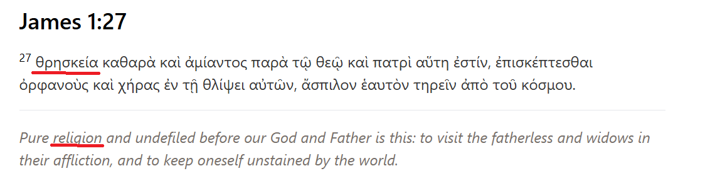
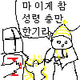

대충 기독교는 종교가 아니라 하나님과의 관계 어쩌구 하는 소리

팩트는 성경에도 종교라고 나와있음
대충 기독교는 종교가 아니라 하나님과의 관계 어쩌구 하는 소리

팩트는 성경에도 종교라고 나와있음
원래 의도 :
너희들 천국 보내줄테니까 이승도 천국처럼 만들고 다른 사람들도 같이 천국 갈 수 있도록 노력하렴
인간들이 받아들인 것 :
다 벌 받아놨으니까 십자군전쟁처럼 다른 종교들 핍박하고 돈 긁어모으면서 개같이 살다가 죽기 전에만 지쟈스 크라이스트 하면 천국감ㅇㅇ
ㅅㅂ 반박불가네 ㅋㅋㅋㅋㅋㅋㅋㅋㅋ
다른 사람들도 같이 천국 갈 수 있도록 노력 = 전도
내가 배운전도는 위에 성경구절처럼 경건한 삶을 살고 그러면서 주위의 남을 돕고 감화감동시켜서 전도하는거라고 배웠는데 요즘 교회보면 사람수불리기에 집중하는거 같아보임

가장 큰 건 현대인이 종교를 보는 관점과 과거의 사람들이 종교를 보던 관점이 너무 달라서지
수천년전의 종교는 공통적으로 이해 불가능한 현상을 이해 가능한 언어로 설명하려는 시도들이 포함되어 있었고, 그렇기에 신앙이라는 것이 선택이나 조건을 따지는 것이 아니라, 그냥 마른 하늘에 벼락치듯 이게 뭔가 싶지만 그냥 있는 것들이였음
근데 현대인들은 신앙을 분석하고 따지니 기존의 신학들과 충돌하거든, 많은 부분에서 신앙은 불교든 기독교든 이슬람이든 정교한 논리구조로 완성되는게 아니라, 그런 헛점도 존재한다고 인식하고 납득하는게 필요함
그러니 무교의 입장에서는 종교를 믿는 관점의 사람이 이해가 안되고, 종교를 믿는 관점의 사람은 무교가 이해가 쉽지 않음
왜 기독교 관련한 생각들은 제 3자 입장에서 보면, 열에 아홉은 오만해 빠졌을까
선민사상이 근본인 종교라 그럼. 외적으로는 착해보이는데 내면은 오만과 교만으로 가득 차 있음.
맞지 애초에 뿌리인 유대교 부터 유대인은 선택받은 민족이라는 개념으로 접근했으니깐
쟤는 왜 아무것도 모르는 분야 강의하고 다니냐
강의하고 싶으면 자기 분야 하면 되는데
이건 기독교쪽에서 나오는게 아니라 박진영독자연구인데?
기독교쪽에서 많이 나옴ㅋㅋ
성경이 미리 벌받은거임? 그니까 예수가 십자가끌고가고 십자가에 매달려 죽은게
우리 벌 미리 다 받아놓은거라는거야?
맞음. 모든 인류의 후손에게는 아담과 이브가 에덴동산에서 저지른 죄,
즉 하나님의 명령을 어긴 '원죄'가 있었음. 이 '원죄'는 태초의 죄이고 유전되는 것으로 봄.
예수님이 십자가에 매달려 돌아가실 때 인류의 모든 '원죄'와, 이 원죄에서 파생된 죄들을
모두 대신하여 죗값을 치르셨다 (대속죄) 라고 보는 거임.
진짜 종교가 없는 나로서는 저런걸 믿는다는게 정말 이해가안간다
어차피 현대인들은 모두 과학이라는 종교를 믿는 입장에서 이해못할것도 없음
고대인 입장에선 저게 최신과학이었음
한국인이면 기본적으로 불교+유교를 기반으로 살고있기 때문에
종교가 없다는건 살짝 안맞음
전혀 아님 ㅋㅋ
엣? 위에애는 맞다는뎈ㅋㅋㅋ
원죄가 어떤 의미냐는 신교 구교 정교 간의 차이가 있지만
어디도 미래의 죄까지 다 예수가 대신 받아서 우리가 앞으로 지을 죄도 걱정 없다고 하진 않음.
미래의 죄 까지 모두 예수가 속죄 했으면 고해성사는 왜 하겠어
신성 고트 지자쓰가 친히 속죄 했는데 사제가 죄를 사하는 기도를 받아줄수가 없잖아
회장 결재 받았는데 대리가 자기한테 다시 올리라 하는거지
노
이게 한국개신교의 문제점이기도한데 해석을 넘 자기들해석식으로해서 갈라진게많음
기본적인교리를 공통된거만 말하자면 우리의죄를 구원하고자 십자가에못박혀돌아가신건맞으나 이게 나중의 죄까지의 죄를 사하여주는건아님
기독교를 싫어하는사람들중에 제일 잘못아는부분이
어차피 살인하고 강간하고 회개하면되지 하는데 이부분은 잘못된부분
정통교파인 장로회에선 아니라고 가르침
진정한 회개라는게 피해자 혹은 그의가족들이 이젠 됐다하고 인정받을때까지라고 가르쳤고 장로회신학대학교교수님들도 그이야기들 많이함 내가 그교수님들밑에서 이야기를 들었고
전세계 사람들의 빚을 너한테 몰아주고 너 십자가에 매달으니, 전세계 빚이 전부 사라졌더라~
반대로가끔정상적인소리가나오는거아님?
종교가 뭔지 사람마다 너무 다르게 정의해서 생기는 문제인듯 단어는 하나인데 실체는 여러개
본문 내용도 그렇고...특정 인물이나 단체에서 자기들이 생각한대로 단어 뜻 부여하거나 바꾸고 말장난하는거 너무 싫은...
미리 벌을 받아놨다니 이번 생은 나쁜짓 ㅈㄴ 하다가도 된다는거네?
카톨릭의 경우는 구원이 취소가 되는 개념이라 세례 받으면 구원 받지만 죄를 지으면 구원 취소되고 고해성사를 통해 죄를 씻어야 구원 받는다는 교리임. 그러니까 나쁜짓 ㅈㄴ 하면 안됨.
개신교의 경우(종파마다 살짝은 다르지만) 구원은 취소되지 않음. 왜냐하면 개신교 교리 상 구원은 전적으로 신의 권리이고 신은 전지전능전선하기 때문에 구원이 취소된다 -> 신이 구원했다가 "다시보니 얜 천국 안되겠다?" 하고 취소 했다는 의미라 신의 전지전능전선이 깨지기 때문에 있을 수 없는 일임. 그래서 구원의 여부를 인간이 확신할 수 없음. "난 구원 받았으니 이번 생은 나쁜짓 ㅈㄴ 하다가도 된다" 라고 하는 사람은 구원 받지 못 했으면서 자기 혼자 김칫국 마시고 있다는게 됨
기독교인들 착한사람들도 많은데 옆에있는 병신들을 배척하지 않은게 잘못인듯
마음을 돌리게 하되 안되는 ㅂㅅ들은 끊어내라는 것도 가르침인데 연 끊는 것도 나름 어려우니
종교가 말은 쉬운데 사람마다 생각하는 바가 너무 달라서 어쩔 수 없음
이형 그냥 엔터테인먼트만 했음 좋겠는데 ㅠㅠ
연예편지라고 했다고 까는건 좀 억까고. 왜 본인 커리어 망치는 짓을 대놓고 하는지.. 안타깝구만.
중학생때 그 어린마음때 교회에서 설교중인 목사가
세종대왕님도 이순신장군님도 안타깝지만 지옥에 계실거야
이러는거 보고 정털려서 교회 안나갔는데
이양반 왜 사이비가 되려고 하는가...
JYP닮은 개신교도인줄 알았는데...JYP였어?
ㅈ같은 종교들 한번 싸악 줄빠따 때리고 싹을 잘라야하는데
아 박진영이 신학대학교 2학년병 걸렸다는게 뭔소린가 했는데 중이병 종교버전으로 온거네 ㅋㅋ
다른 이야기인데. 내가 모태신앙으로 20대 까지 교회에서 봉사도하고 해외도 가고 회장도 하고 진짜 열심히 했었는데.
지금은 교회에 안다니게 된게. 내가 인간이라 그런지 모르겠는데 아무리 생각해도 이상적인 천국의 형태가 떠오르지가 않음.
영원히 사는거 + 영원히 행복한거가 매치가 안됨. 불행이 없이 행복이 있다는게 이해가 안됨 내기준에서.
만족이 있으려면 결핍이 있어야되는건데.
십계명에 우상숭배 하지말랫는데 하고있음 ㅋㅋ
독자연구는 위험한법